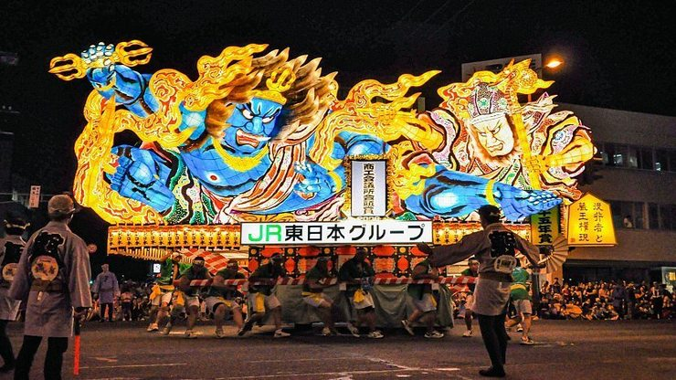
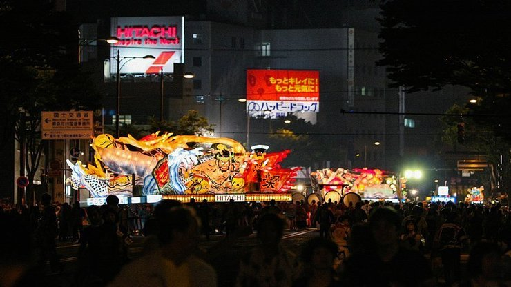
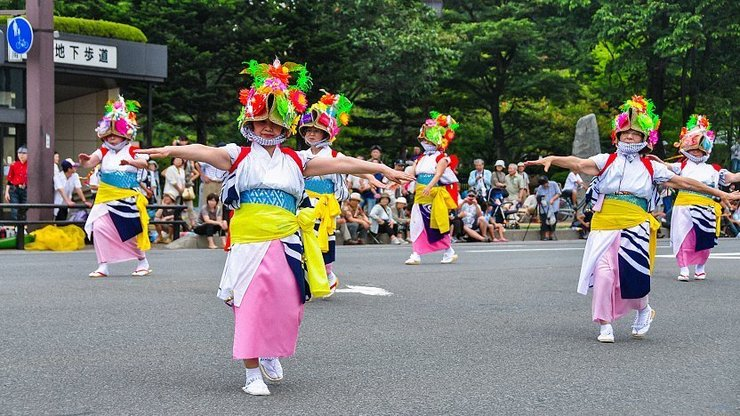
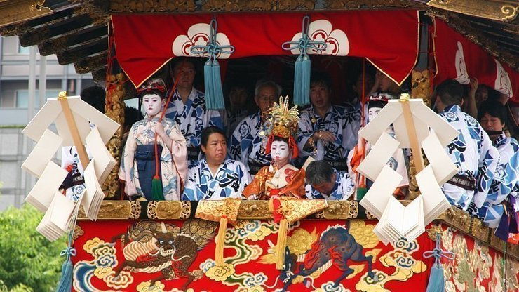

Aomori Nebuta Matsuri – August
The Aomori Nebuta Matsuri (青森ねぶた祭り, "Aomori Nebuta Festival" or simply "Aomori Nebuta") is a Japanese summer festival that takes place in Aomori, Aomori Prefecture, Japan in early August. The festival attracts the most tourists of any of the country's nebuta festivals, and is counted among the three largest festivals in the Tōhoku region. It was designated an Important Intangible Folk Cultural Property in 1980,visitors and as one of the 100 Soundscapes of Japan by the Ministry of the Environment in 1996.[1]
"Nebuta" refers to the float of a brave warrior-figure which is carried through the center of the city, while dancers wearing a unique type of costume called haneto (ハネト) dance around in time with the chant Rasserā (ラッセラー) (shorten dialectal version of "irasshai", calling and customers to watch or join). In the local dialect, participation in the festival is inquired using the verb haneru (ハネル, ex. "今日もハネル?" or "Are you going to haneru today?"), which was derived from the Japanese spelling of the haneto costume and the verb haneru (跳ねる, "bounce").



